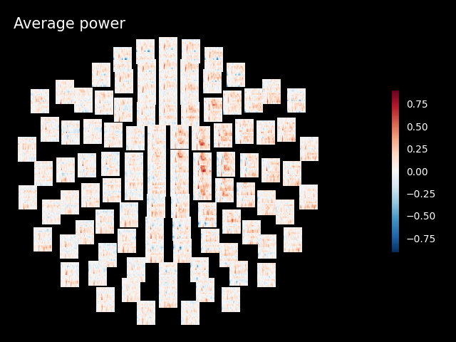
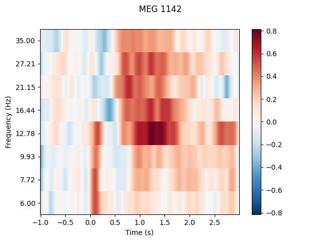
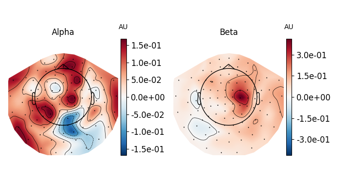

Note
Click here to download the full example code
Frequency and time-frequency sensor analysis#
The objective is to show you how to explore the spectral content of your data (frequency and time-frequency). Here we’ll work on Epochs.
We will use this dataset: Somatosensory. It contains so-called event related synchronizations (ERS) / desynchronizations (ERD) in the beta band.
# Authors: Alexandre Gramfort <alexandre.gramfort@inria.fr>
# Stefan Appelhoff <stefan.appelhoff@mailbox.org>
# Richard Höchenberger <richard.hoechenberger@gmail.com>
#
# License: BSD-3-Clause
import os.path as op
import numpy as np
import matplotlib.pyplot as plt
import mne
from mne.time_frequency import tfr_morlet, psd_multitaper, psd_welch
from mne.datasets import somato
Set parameters
data_path = somato.data_path()
subject = '01'
task = 'somato'
raw_fname = op.join(data_path, 'sub-{}'.format(subject), 'meg',
'sub-{}_task-{}_meg.fif'.format(subject, task))
# Setup for reading the raw data
raw = mne.io.read_raw_fif(raw_fname)
# crop and resample just to reduce computation time
raw.crop(120, 360).load_data().resample(200)
events = mne.find_events(raw, stim_channel='STI 014')
# picks MEG gradiometers
picks = mne.pick_types(raw.info, meg='grad', eeg=False, eog=True, stim=False)
# Construct Epochs
event_id, tmin, tmax = 1, -1., 3.
baseline = (None, 0)
epochs = mne.Epochs(raw, events, event_id, tmin, tmax, picks=picks,
baseline=baseline, reject=dict(grad=4000e-13, eog=350e-6),
preload=True)
Opening raw data file /home/circleci/mne_data/MNE-somato-data/sub-01/meg/sub-01_task-somato_meg.fif...
Range : 237600 ... 506999 = 791.189 ... 1688.266 secs
Ready.
Reading 0 ... 72074 = 0.000 ... 240.001 secs...
29 events found
Event IDs: [1]
29 events found
Event IDs: [1]
29 events found
Event IDs: [1]
Not setting metadata
29 matching events found
Setting baseline interval to [-1.0, 0.0] sec
Applying baseline correction (mode: mean)
0 projection items activated
Using data from preloaded Raw for 29 events and 801 original time points ...
Rejecting epoch based on EOG : ['EOG 061']
1 bad epochs dropped
Frequency analysis#
We start by exploring the frequency content of our epochs.
Let’s first check out all channel types by averaging across epochs.
epochs.plot_psd(fmin=2., fmax=40., average=True, spatial_colors=False)
Using multitaper spectrum estimation with 7 DPSS windows
Now, let’s take a look at the spatial distributions of the PSD, averaged across epochs and frequency bands.
epochs.plot_psd_topomap(ch_type='grad', normalize=False)
Using multitaper spectrum estimation with 7 DPSS windows
Alternatively, you can also create PSDs from Epochs with functions
that start with psd_ such as
mne.time_frequency.psd_multitaper() and
mne.time_frequency.psd_welch().
Note
In contrast to the methods for visualization, those psd_* functions do
not scale the data from SI units to more “convenient†values. So when
e.g. calculating the PSD of gradiometers via
psd_multitaper(), you will get the power as
(T/m)²/Hz (instead of (fT/cm)²/Hz via
plot_psd()).
f, ax = plt.subplots()
psds, freqs = psd_multitaper(epochs, fmin=2, fmax=40, n_jobs=None)
psds = 10 * np.log10(psds) # convert to dB
psds_mean = psds.mean(0).mean(0)
psds_std = psds.mean(0).std(0)
ax.plot(freqs, psds_mean, color='k')
ax.fill_between(freqs, psds_mean - psds_std, psds_mean + psds_std,
color='k', alpha=.5)
ax.set(title='Multitaper PSD (gradiometers)', xlabel='Frequency (Hz)',
ylabel='Power Spectral Density (dB)')
plt.show()
Using multitaper spectrum estimation with 7 DPSS windows
Notably, mne.time_frequency.psd_welch() supports the keyword argument
average, which specifies how to estimate the PSD based on the individual
windowed segments. The default is average='mean', which simply calculates
the arithmetic mean across segments. Specifying average='median', in
contrast, returns the PSD based on the median of the segments (corrected for
bias relative to the mean), which is a more robust measure.
# Estimate PSDs based on "mean" and "median" averaging for comparison.
kwargs = dict(fmin=2, fmax=40, n_jobs=None)
psds_welch_mean, freqs_mean = psd_welch(epochs, average='mean', **kwargs)
psds_welch_median, freqs_median = psd_welch(epochs, average='median', **kwargs)
# Convert power to dB scale.
psds_welch_mean = 10 * np.log10(psds_welch_mean)
psds_welch_median = 10 * np.log10(psds_welch_median)
# We will only plot the PSD for a single sensor in the first epoch.
ch_name = 'MEG 0122'
ch_idx = epochs.info['ch_names'].index(ch_name)
epo_idx = 0
_, ax = plt.subplots()
ax.plot(freqs_mean, psds_welch_mean[epo_idx, ch_idx, :], color='k',
ls='-', label='mean of segments')
ax.plot(freqs_median, psds_welch_median[epo_idx, ch_idx, :], color='k',
ls='--', label='median of segments')
ax.set(title='Welch PSD ({}, Epoch {})'.format(ch_name, epo_idx),
xlabel='Frequency (Hz)', ylabel='Power Spectral Density (dB)')
ax.legend(loc='upper right')
plt.show()
Effective window size : 1.280 (s)
[Parallel(n_jobs=1)]: Using backend SequentialBackend with 1 concurrent workers.
[Parallel(n_jobs=1)]: Done 1 out of 1 | elapsed: 1.5s remaining: 0.0s
[Parallel(n_jobs=1)]: Done 1 out of 1 | elapsed: 1.5s finished
Effective window size : 1.280 (s)
[Parallel(n_jobs=1)]: Using backend SequentialBackend with 1 concurrent workers.
[Parallel(n_jobs=1)]: Done 1 out of 1 | elapsed: 3.7s remaining: 0.0s
[Parallel(n_jobs=1)]: Done 1 out of 1 | elapsed: 3.7s finished
Lastly, we can also retrieve the unaggregated segments by passing
average=None to mne.time_frequency.psd_welch(). The dimensions of
the returned array are (n_epochs, n_sensors, n_freqs, n_segments).
psds_welch_unagg, freqs_unagg = psd_welch(epochs, average=None, **kwargs)
print(psds_welch_unagg.shape)
Effective window size : 1.280 (s)
[Parallel(n_jobs=1)]: Using backend SequentialBackend with 1 concurrent workers.
[Parallel(n_jobs=1)]: Done 1 out of 1 | elapsed: 1.1s remaining: 0.0s
[Parallel(n_jobs=1)]: Done 1 out of 1 | elapsed: 1.1s finished
(28, 204, 49, 3)
Time-frequency analysis: power and inter-trial coherence#
We now compute time-frequency representations (TFRs) from our Epochs. We’ll look at power and inter-trial coherence (ITC).
To this we’ll use the function mne.time_frequency.tfr_morlet()
but you can also use mne.time_frequency.tfr_multitaper()
or mne.time_frequency.tfr_stockwell().
Note
The decim parameter reduces the sampling rate of the time-frequency
decomposition by the defined factor. This is usually done to reduce
memory usage. For more information refer to the documentation of
mne.time_frequency.tfr_morlet().
define frequencies of interest (log-spaced)
[Parallel(n_jobs=1)]: Using backend SequentialBackend with 1 concurrent workers.
[Parallel(n_jobs=1)]: Done 1 out of 1 | elapsed: 0.0s remaining: 0.0s
[Parallel(n_jobs=1)]: Done 2 out of 2 | elapsed: 0.0s remaining: 0.0s
[Parallel(n_jobs=1)]: Done 3 out of 3 | elapsed: 0.0s remaining: 0.0s
[Parallel(n_jobs=1)]: Done 4 out of 4 | elapsed: 0.0s remaining: 0.0s
[Parallel(n_jobs=1)]: Done 204 out of 204 | elapsed: 1.8s finished
Inspect power#
Note
The generated figures are interactive. In the topo you can click on an image to visualize the data for one sensor. You can also select a portion in the time-frequency plane to obtain a topomap for a certain time-frequency region.
power.plot_topo(baseline=(-0.5, 0), mode='logratio', title='Average power')
power.plot([82], baseline=(-0.5, 0), mode='logratio', title=power.ch_names[82])
fig, axis = plt.subplots(1, 2, figsize=(7, 4))
power.plot_topomap(ch_type='grad', tmin=0.5, tmax=1.5, fmin=8, fmax=12,
baseline=(-0.5, 0), mode='logratio', axes=axis[0],
title='Alpha', show=False)
power.plot_topomap(ch_type='grad', tmin=0.5, tmax=1.5, fmin=13, fmax=25,
baseline=(-0.5, 0), mode='logratio', axes=axis[1],
title='Beta', show=False)
mne.viz.tight_layout()
plt.show()
- 
- 
- 
Applying baseline correction (mode: logratio)
Applying baseline correction (mode: logratio)
Applying baseline correction (mode: logratio)
Applying baseline correction (mode: logratio)
Joint Plot#
You can also create a joint plot showing both the aggregated TFR across channels and topomaps at specific times and frequencies to obtain a quick overview regarding oscillatory effects across time and space.
power.plot_joint(baseline=(-0.5, 0), mode='mean', tmin=-.5, tmax=2,
timefreqs=[(.5, 10), (1.3, 8)])
Applying baseline correction (mode: mean)
Applying baseline correction (mode: mean)
Applying baseline correction (mode: mean)
Inspect ITC#
itc.plot_topo(title='Inter-Trial coherence', vmin=0., vmax=1., cmap='Reds')

No baseline correction applied
Note
Baseline correction can be applied to power or done in plots. To illustrate the baseline correction in plots, the next line is commented power.apply_baseline(baseline=(-0.5, 0), mode=’logratio’)
Exercise#
Visualize the inter-trial coherence values as topomaps as done with power.
Total running time of the script: ( 0 minutes 30.367 seconds)
Estimated memory usage: 417 MB